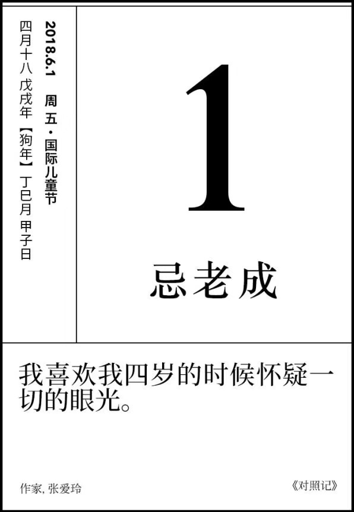

目录
今天是六一儿童节，早早的起床给儿子去打疫苗，这对于小家伙来说应该是无比痛苦的吧。不过，比起热更痛苦的应该是挨上一针，和看着小家伙挨针的心情！！！_
刚才我俩因为给孩子换尿不湿又拌了一次嘴，我想这大概和天气有关系，也和这个日子不太贴合，黄历上说：今天忌老成，得耍点小脾气。

我们时常会羡慕别人，为什么自己不是幸运的大多数，偏偏自己就是最不幸的。可是往往我们忽略了，如果幸运降临的时候，你真的能接住吗？
每次当我有"我不是幸运的大多数"这种想法的时候，我就会怀疑一切。我大概活成了插图一样的命运。

我的儿子叫冬冬，今天是五个月十天了。不瞒你们说，我和老婆都有过"是冬冬毁掉了我的生活"这样的想法。很长一段时间夜里没有好好睡过觉，做梦都是围绕着冬冬的情节，电影、美食、逛街…就是看个电视都是奢侈的。
每天要看着他拉的屎下饭，颜色不正会直接导致你吃不下饭，如果是拉稀你就别想着吃饭了。
说话要小声，走路要小声，就连呼吸都要思考着呼吸，“这样呼吸对吗？我是不是不该这样呼吸？”
~~_“W T F !!!”
“完了完了完了！！！”
“我的生活是不是就这样了？”
不是的，其实也有快乐的部分，每天早晨冬冬会冲着我们笑，看到漂亮的小妹妹小姐姐会笑，像天使一样，给了我们生活下去的勇气,
如果因此你更加坚定做一个丁克。如果因此你害怕要孩子，那我只能祝福你们，你们是对的！！！！ 你们还只是孩子。
写完我也准备开始一天的工作 了，六一节快乐！